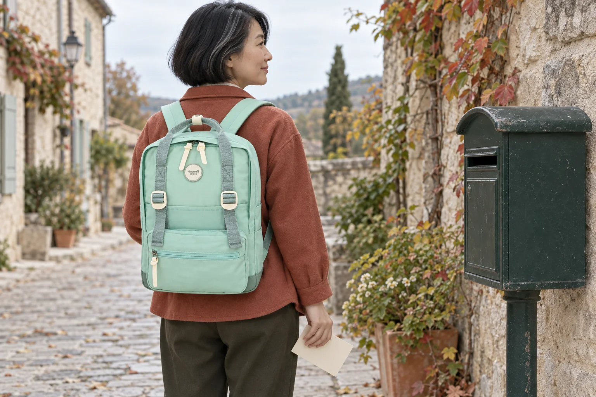
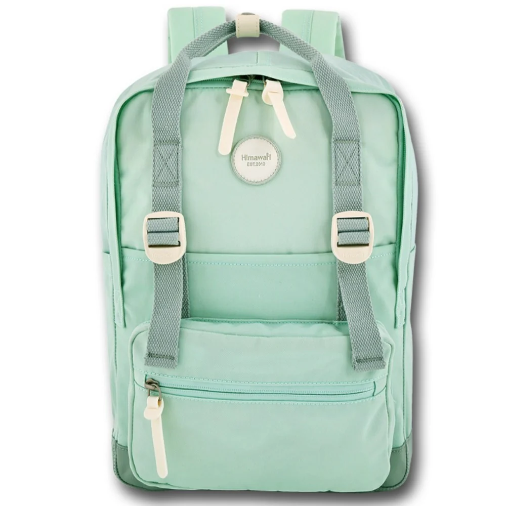

여행 엽서를 보내기 전 읽을 두 면

여행지에서 고른 엽서에 인사를 적으면 할 일을 마친 느낌이 듭니다. 주소를 나중에 쓰려고 비워 둔 엽서가 있을 수도 있고, 우편요금이 포함되어 있는지 아직 모르는 엽서도 있습니다. 쓰는 일과 보내는 일을 같은 완료 표시로 두면 다음 장소로 떠나기 전에 다시 확인할 것이 가방 안에 남습니다. 엽서를 한 장씩 꺼내 두 면을 읽고 현재 상태에 맞춰 나누는 시간을 가져봅니다.
한 사람의 엽서를 끝낸 뒤 다음 장으로
받는 사람의 이름과 현재 주소는 확인한 정보를 곁에 두고 적습니다. 예전에 알던 주소가 그대로라고 기억으로 채우거나 건물 이름의 일부를 짐작해 넣지 않습니다. 연락으로 주소를 확인했다면 그 정보를 엽서와 나란히 읽어 숫자와 이름을 대조합니다. 여러 장을 쓸 때에는 한 사람의 인사와 주소를 함께 마무리한 뒤 다음 사람의 엽서로 넘어가면 서로의 내용이 바뀌었는지 살피기 쉽습니다.
엽서를 받는 사람에게 전하고 싶은 이야기가 길다면 그림 면과 주소 면의 쓸 수 있는 공간을 먼저 봅니다. 주소를 적을 자리를 남기고 인사를 쓰면 마지막에 글씨를 줄여 억지로 넣는 일이 줄어듭니다. 함께 여행한 사람의 개인적인 이야기를 적으려면 그 내용을 공개적인 우편물에 남길지 생각해 볼 수 있습니다. 봉투 없이 보내는 엽서의 인사에는 자기 여행에서 건네고 싶은 내용부터 고르는 편이 자연스럽습니다.
국내 엽서라면 우편번호와 주소를 다시 확인합니다. 우정사업본부의 우편물 외부기재 안내는 수취인 주소와 우편번호를 정확히 쓰고 가려지거나 겹치지 않도록 설명합니다. 여행지에서 그림이나 장식을 덧붙일 때에도 주소를 읽는 자리가 남아 있어야 합니다. 정보가 이미 인쇄되어 있는 엽서라면 새 표시와 겹치지 않는지 함께 살펴봅니다.
우표나 요금 표시가 어떤 의미인지 모르면 엽서를 그대로 가져가 우체국에서 확인합니다. 그림엽서라고 요금이 모두 포함되어 있다고 판단하지 않습니다. 보낼 엽서의 형태와 목적지를 기준으로 필요한 요금과 접수 가능 여부를 확인하면 됩니다. 해외에서 보내거나 해외로 보낼 계획이라면 국내 발송 안내를 그대로 적용하지 않고 해당 발송 조건을 따로 살펴봅니다. 확인하기 전에는 발송 준비 완료로 표시하지 않습니다.
엽서는 내용보다 상태로 나누어 둔다
아직 쓰지 않은 엽서, 주소나 요금 확인이 남은 엽서, 발송할 엽서를 구분합니다. 세 가지 별도 파일을 꼭 준비할 필요는 없습니다. 한 파일 안에 구분 종이를 두거나 봉투를 나누어 현재 위치가 보이게 정할 수 있습니다. 같은 그림의 엽서가 여러 장이면 그림만으로 상태를 구별하기 어렵기 때문에, 엽서의 방향을 바꾸는 방식을 쓸 때에도 어느 방향이 무엇인지 스스로 읽을 표시가 필요합니다.
잉크가 마르지 않은 엽서는 바로 포개지 않고 정리할 시간을 둡니다. 주소를 확인하려고 휴대전화를 보는 동안 엽서를 젖은 테이블이나 음료 옆에 놓지 않습니다. 정리할 공간이 좁으면 여러 장을 한꺼번에 펼치기보다 한 장을 마무리하는 방식이 편합니다. 파일을 닫기 전에는 주소 면이 바깥으로 드러나는지 봅니다. 여행 기록을 찍는 사진에서도 받는 사람의 정보가 함께 담기는지 살펴볼 수 있습니다.
Himawari No.1088M 민트와 함께 소개하는 엽서 장면에서는 가방 안에 남아 있는 종이를 발송 순서대로 꺼내는 준비를 생각합니다. 엽서를 담는 파일은 자신의 종이 크기에 맞춰 고르고, 확인 중인 묶음과 보낼 묶음을 분리해두면 우체국에서 꺼낼 자료를 바로 찾을 수 있습니다. 소품을 많이 더하기보다 현재 엽서들이 어느 상태인지 읽히는 구분을 우선합니다.

우체국을 일정에 넣는다면 실제 방문할 곳의 이용 시간을 확인합니다. 여행 동선에 표시된 가까운 우체국이 그날 필요한 접수를 할 수 있는지도 따로 봅니다. 이동 계획이 바뀌어 당일 보내지 못했다면 발송 완료 표시를 하지 않고 보낼 묶음을 유지합니다. 날짜가 적힌 인사를 고칠지 여부도 자신의 이야기와 실제 발송 계획을 기준으로 결정합니다. 서둘러 주소 확인을 생략할 이유는 없습니다.
발송 뒤 남는 엽서와 여행 기록
엽서를 보낸 뒤에는 가방에 남은 묶음을 읽습니다. 아직 확인 중인 엽서가 있는지, 빈 엽서가 몇 장 남았는지 구분합니다. 보낸 엽서의 번호나 받는 사람을 개인 기록에 남길 수 있지만, 실제로 발송하지 않은 것을 보낸 목록에 넣지 않습니다. 여행 중 종이를 여러 번 꺼내다 보면 빈 엽서와 작성한 엽서가 섞일 수 있으므로 파일을 닫기 전에 현재 상태를 다시 정리합니다.
기념으로 가지고 돌아갈 엽서는 발송할 것과 따로 둡니다. 주소를 쓰지 않은 그림엽서를 모으는 기록과 실제로 보낸 엽서의 기록은 목적이 다릅니다. 구입한 장소나 그림을 고른 이유를 적고 싶다면 별도 메모에 남겨두면 됩니다. 받는 사람의 주소를 그대로 촬영해 여행 사진 묶음에 넣기보다 그림과 자신의 인사 가운데 남길 내용을 골라 찍는 방식도 생각해 볼 수 있습니다.
귀가 후 파일을 정리하다 보내지 못한 엽서가 나오면 그 상태부터 확인합니다. 주소를 확인하지 못한 것인지, 요금을 물어볼 시간이 없었던 것인지 메모가 있으면 다음 행동을 정하기 쉽습니다. 지금도 같은 인사를 보내고 싶은지 읽고 필요한 정보를 다시 확인합니다. 남은 엽서를 바로 빈 엽서 더미에 섞기보다 발송을 이어갈지 개인 기록으로 둘지 결정한 뒤 정리합니다.
여행 엽서는 그림을 고르는 순간과 인사를 쓰는 순간, 우편으로 건네는 순간이 서로 다른 시간에 일어납니다. 어느 단계까지 마쳤는지 알 수 있는 표시가 있으면 다음 장소로 옮겨도 준비를 이어갈 수 있습니다. 마지막에 가방을 닫을 때에는 보낼 묶음의 주소와 요금 확인이 끝났는지 한 장씩 읽습니다. 실제 발송을 마친 뒤에만 그 묶음을 기록에서 닫으면 됩니다.